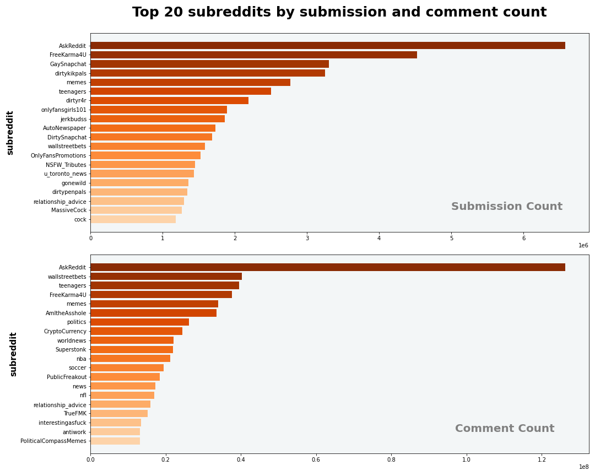
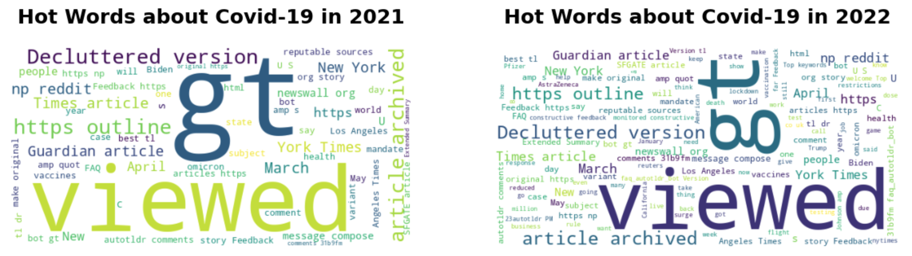
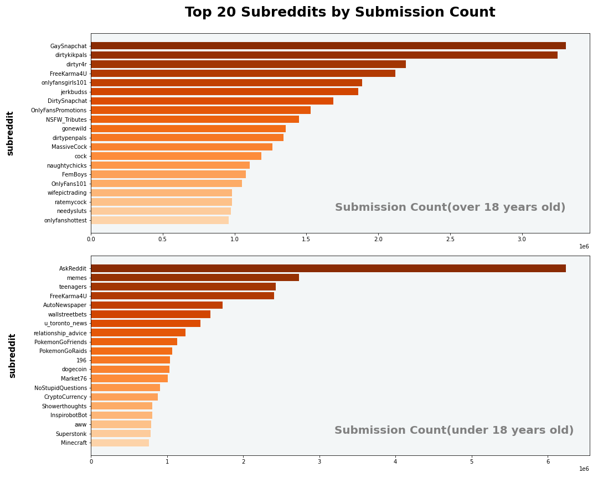
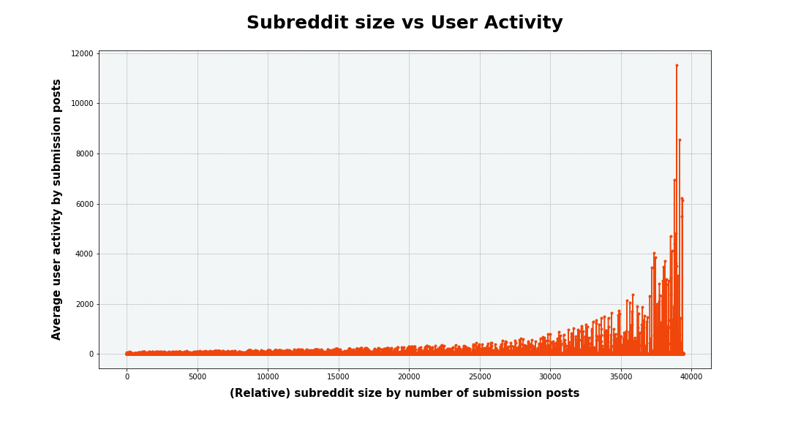
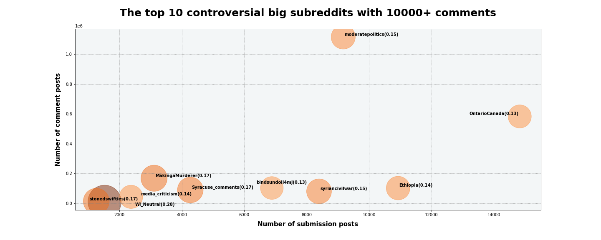

Milestone 1: Exploratory Data Analysis
Pages
Executive Summary
“The greatest value of a picture is when it forces us to notice what we never expected to see.” learned a lot from the famous statistician John Tukey, our first step of the project focused on the Exploratory Data Analysis, producing summary tables and exploratory visualizations to support and inspire our research avenues. For example, after we explored and visualized the top 20 biggest SubReddits like the bar chart below, we found “AskReddit” as the biggest SubReddit among all, so we found it a valuable target of analysis, proposing several business questions(gilded/not & cancelled accounts) and preparing proper subsets of data for further analysis in the later stages. Besides, the distinct patterns of top 20 SubReddit for adult and teenager users inspired us another potential research avenue regarding the importances of these 2 groups of users.

Figure 1: Top 20 SubReddits by submission and comment count
However, our exploration was not always supportive of our avenues, or to say, our initial ideas about those avenues. As we cleaned our data and attempted to summarize our targets of interest, we ultimately found some of the initially-proposed questions unsolvable or hardly fruitful, so we had to change many things, from potential research strategies to questions, even to our focus of research. For example, in order to explore on the topics of posts in the “AutoNewspaper” SubReddit, we conducted a COVID-related regex match and compared the extracted keywords from 2021 and 2022 displayed in the below wordclouds, but we did not make it to extract much useful information from the charts, which is likely due to limited capability of simple regex models on topic extraction. Thus, we shifted our attention to the clearly-viable avenues and edited those topic-related questions as a path of future research. In conclusion, through the EDA progress we managed to explore the viabilities of our business questions and shifted our attention to “WallStreetBets” and “AskReddit” SubReddits for further NLP/ML analysis.

Figure 8: Top10 controversial SubReddits with 10000+ comments
Analysis Report
Data Explore and Preprocessing.
Basic information check and data clean.
As the starting point, we explored the basic structure of Reddit comments and submissions datasets, including the size, data type and schema. We found that the shape of the submissions dataset is 643,255,528x68, and the shape of the comments dataset is 4,473,556,762x21. The records in comments dataset are far exceeded submission dataset, but submissions dataset contains more column, which means more detailed information compared with comments dataset. Then, we computed the missing value count for each column to checked the quality of two datasets. We found some of the columns have many missing values and we don’t need them for our goal. Therefore, we remove these columns for analysis propose.
After removing redundant columns, we didn’t drop rows still contain missing value to avoid omitting key information. We prefer to do this further cleaning as needed in subsequent tasks. After data cleaning, the shape of the submissions dataset is 643,255,528x35, and the shape of the comments dataset is 4,473,556,762x16.
Create new features.
In order to better explore the user behavior in the following work, we created a few new features based on the current information. For comments and submissions datasets, we created some time scale features:
- date variable: generate the date format like ‘2011-0-01’
- month variable: generate the month of the date, like ‘1’
- hour variable: generate the hour of when comment or submission is publishes, like ‘23’
- day_of_week variable: 1 for Sunday, 2 for Monday,…,7 for Saturday
And for comments dataset, we also created a dummy variable ‘account_deleted’ to record whether the author account has been deleted.
Exploratory Data Analysis
To answer the questions we asked, we explored the user behavior of entire Reddit society as our first step.
Business Goal 7 & 9
business goal 7: If the Reddit company is considering holding an interactive event, then when and how should they host that event so the Reddit user participation rate could be at most?
business goal 9: Which of the 2 groups, adults and teenagers, consists of a more important part in the Reddit society?
To figure out the answer of bussiness goal 7 and 9, we analyzed and summarized the behavior of active Reddit users. First of all, we grouped the submissions and comments by SubReddit, and counted the number of records in each SubReddit. According to the results, we plotted bar plots as figure 1 to show what are the most popular SubReddits. From the figures, we could observe that there exists a big difference in the topics favored by submission and comment. People tend to make a post for NSFW contents in many different 18+ SubReddits while response a post for SFW contents. Meanwhile, topics about News, Sports, investment market are top of the comment count.
Figure 1: Top 20 SubReddits by submission and comment count
Secondly, we grouped the submissions by SubReddit and users’ age, and plotted the comparison bar plots of the popular SubReddits for adult and teenager authors. From the figure, we could observe that there exists a big difference in the topics favored by teenager and adult authors. While teenagers often use Reddit to ask questions and exchange experiences&ideas among various topics, the adult authors seem to focus on posting NSFW contents in many different 18+ SubReddits. One of the key SubReddit AskReddit is mainly used by the teenagers, thus the professional level of the channel seems a bit suspicious. Maybe there are other forums for more professional questions to be asked and to be solved.

Figure 2: Top 20 SubReddits by submission for adults and teenagers
Moreover, we explored Reddit users’ behavior and habit by different time scale. Because the time range for these two dataset is from 2021-01-01 to 2022-08-31, we only kept 2021 data for month scale analysis, and kept the whole data for day of week, date and hour of day scale analysis. After grouping and counting submissions and comments records by different time scale, we plotted the line plot and bar plot shown as figure 3 and figure4.
According to the figure 3, we can see how Reddit submission and comment count change from 2021-01-01 to 2022-8-31 on different time scale. We can find that the changes of submission count and comment are not totally match each other. For example, from June to September, submission count gradually decreases, but comment count gradually increase. Meanwhile, May is the most active month within a year for reddit. Within a day, the fluctuations of submission and comment count look like very similar, gradually decrease from 18:00 to the next day 08:00, and gradually increase from 08:00 to 17:00. Moreover, daily submission and comment count show a certain pattern fluctuation, which might caused by weekday and weekend.

Figure 3: Submissions and comments count by different time scale
By observing the left plot in the figure 4, we could observe that posts of both submissions and comments type are made most often during weekdays and less often on weekends, which seems reasonable since people might enjoy their casual time during the weekends and have no need to browse the forums on their phone which only utilizes scattered pieces of time. From the right figure, we could also observe that for submission posts, teenager authors make way more posts than adult authors, while their posting behavior seems to define the pattern illustrated by the left figure, making the most posts on weekdays.

Figure 4: Submissions and comments count by day of week
According to the above analysis, we could get answer of our business goal 7 and 9. Because the count of submissions and comments best represent the user activity, the time and SubReddits with more submissions and comments are tend to be more active. Therefore, if the Reddit company is considering holding an interactive event, the weekdays’ afternoon in May are good choices. Meanwhile, the behavior and habit of adult and teenager user are different, especially the topics favored by them. From 2021-01-01 to 2022-08-31, teenager user consists of a more important part in the Reddit society, many key SubReddits like AskReddit were mainly used by teenagers. Therefore, the content of interactive event should pay more attention to teenagers’ preference to improve the participation rate.
Business Goal 2
- Business goal 2: Determine if Reddit users tend to be less active in average when they are browsing a larger SubReddit, since sense of self-presence is closely related to activity and is potentially weaker in bigger forums due to presence of too many people.
Besides user behavior and habit we explored above, we also want to know whether the activity of user would be influenced by the size of SubReddit. In this part, we need to find a way to measure SubReddit size and user activity. As presence of auto-reply bots in the comments, we decided to use submissions to account for user activities in SubReddits. Therefore, we group submissions by SubReddit and compute the distinct author count and the ‘title’ count. Then we used the count of ‘title’ as SubReddit size, and divided this SubReddit size by the distinct author count as average user activity.
In the end, we visualized the results as figure 5 below. In the figure, we can observe the relative size of SubReddits along with their average user activity shows a clear exponential shape, which indicates Reddit users tend to be more active when situated in a larger web community.

Figure 5: SubReddit size VS. user activity
According to this plot, we could get answer of our business goal 2. For Reddit users, when they are situated in a larger SubReddit, they tend to be more active than in a relative small SubReddit. This result is opposite to our initial thought, but seems reasonable. Since people usually want to grant sense of self-existence by receiving comments from others, which is definitely more easily when they express themselves in a larger community.
Business Goal 10
- Business goal 10: Video posts have been thriving as a new type of reddit posts. What are their target users and how well do they perform in the aspect of score and awards?
Because video posts have been thriving as a new type of reddit posts, exploring the user behavior associated with video posts is also one of our directions. We want to know video post are popular in which SubReddits? Is there any difference between adult and teenager users? To realize our goal, we filtered and kept the submissions that is video post, and divided into adult and teenager users. And then we group these video submission by SubReddit and compute the total count in each SubReddit. This process was done separated for adult and teenager users. In the end, we got top 10 SubReddits where teenagers and adults are most likely to post their videos, as the following table1 shown. We could found that, for teenager and adult users, the top10 SubReddits to post video are extremely different, only two SubReddits ‘tiktokthots’ and ‘unexpected’ are overlap.
| Rank | Teenager | Adult |
|---|---|---|
| 1 | ksi | KGBTR |
| 2 | shitposting | boypussy |
| 3 | apexlegends | tiktokthots |
| 4 | aww | FreeKarma4U |
| 5 | Unexpected | assaddicts1 |
| 6 | funny | ebonyhomemade |
| 7 | nextfuckinglevel | shitposting |
| 8 | 196 | Unexpected |
| 9 | cats | lean |
| 10 | tiktokthots | The_ASSylum |
Table 1: Top10 SubReddits for video posts
From this summary table, we could get answer of our business goal 10. The choices for teenager and adult users to post video are extremely different. For adult users, they tend to use video for NSFW contents. As for teenagers, they usually use video posts for spreading memes, enjoying popular culture and sharing experiences. Besides, this results further support our observation before, that suggests a difference in taste for teenagers and adults in Reddit.
Business Goal 3
- Business goal 3: Explore the pattern of most active users. Are they posting more controversial or negative content in order to grab attention from others?
Publishing controversial submission and comment is also a very interesting user behavior, so we want to explore the reason for this kind behavior. In EDA part, we only planed to preliminary explore controversiality, the further analysis will be down in ML part. Because ‘controversiality’ is a boolean type feature in comments dataset, we could get the proportion of controversial comments in each SubReddit just by grouping the comments by SubReddit and computing the average value of controversiality. In order to exclude extreme situation, we only kept SubReddits with 10000+ comments. In the end, we got top 10 controversial SubReddit. The results are shown as table 2 and figure 6 below. From the bubble plot, we could find that popular culture (stonedswifties, media_criticism, MakingaMurderer, blndsundoll4mj), regional forum(WI_Neutral, Syracuse_comments, Ethiopia, OntatioCanada) and Politics&War(syriancivilwar, moderatepolitics) are the most controversial topics. Meanwhile, WI_Neutral serves as the most controversial big SubReddit with 10000+ comments, with 28% of its comments tagged as controversial, which is possibly due to the elections happening.
| Rank | SubReddit | Submission | Comment | Controversial | ||||||
| 1 | WI_Neutral | |
10224 | |
||||||
| 2 | MakingaMurderer | |
168140 | |
||||||
| 3 | stonedswifties | |
13848 | |
||||||
| 4 | Syracuse_comments | |
89271 | |
||||||
| 5 | syriancivilwar | |
80252 | |
||||||
| 6 | moderatepolitics | |
1115651 | |
||||||
| 7 | Ethiopia | |
102000 | |
||||||
| 8 | media_criticism | |
43307 | |
||||||
| 9 | |
|
582875 | |
||||||
| 10 | blndsundoll4mj | |
102680 | |
Table 2: Top10 SubReddits for video posts

Figure 6: Top10 controversial SubReddits with 10000+ comments
According to the results up to now , we still cannot answer the business goal 3, but we could find that popular culture, regional forum, politics and war are most controversial topic in Reddit.
To answer the rest of the questions, we explored the some specific SubReddit “WallStreetBets” and “AutoNewspaper”.
Business Goal 5
- Business goal 5: Could Reddit posts in financial fields reflect the actual market state? Explore the potential correlation between US stock price and Reddit mood in the SubReddit “Wallstreetbets”, a business and financial topic.
“Wallstreetbets” is a famous financial SubReddit in Reddit society, so we wonder could “Wallstreetbets” posts reflect the actual market state? And we are interested in whether we can find some potential correlation between US stock price and Reddit “Wallstreetbets” posts. Because we planed to dive into this topic in NLP part, we only preliminary explored the relationship between “Wallstreetbets” users’ activity and Us stock market index.
For external data, we got SP&500, NASDAQ and Dow Jones index from 2021-01-01 to 2022-8-31, and the missing value of stock market closed day is filled by valid data the day before. For Reddit data, we filter comments and submissions in Wallstreetbets at first, and group them by date and count the number of daily comments and submissions. After that, we merge two part data by date, and plotted the line plot as shown in figure 7. From the plot, we can see an obvious spike at about 2021-02 for both daily comments and submission counts. Other patterns are not very obvious.

Figure 7: “Wallstreetbets” SubReddit count and stock market index
According to the results up to now , we still cannot answer the business goal 5, but we found an interesting spike point at about 2021-02. This might be a good point for us to do further analysis in NLP part. In NLP part, we will also use more powerful techniques like sentiment analysis to examine the relationship between the content of comments and submissions and stock market index.
Business Goal 6 & 8(changed)
Business goal 6: If the Reddit company decides to bring more attention to SubReddit “AutoNewspaper”, then explore which type of news is more welcomed by the reddit user.
Business goal: If the Reddit company decides to include more news in the SubReddit “AutoNewspaper”, then which news source should they be focused on based on the steadiness of making new posts, for various types of news?
According to our initial business goal, we planed to explore different type of news in “AutoNewspaper” SubReddit. However, we have been blocked in the process of using regex searches for specific keywords. We tried many ways but still failed to find an appropriate topic extraction method to create type label for comments in “AutoNewspaper” SubReddit. Table 3 and figure 8 shown as below are the results of our attempt to find comments associated with covid-19. We used regex search to check whether a comments contain keywords ‘covid’, ‘coronavirus’, ‘vaccine’, ‘pandemic’, ‘mask’, ‘quarantine’, ‘restriction’ to create a dummy variable ‘covid-topic’.
However, according to the results of checking by surfing the comment content and displayed wordclouds, we didn’t realize this task very well. Finally, we decided to give up exploring our business goal 6 and 8, but we will implement the techniques and methods mentions in these two business goals in other business goals.
| Year | Covid Topic | Count |
| 2021 | |
15409 |
| 2022 | |
11535 |
| 2021 | |
1072 |
| 2022 | |
508 |
Table 3: The number of comments associated with covid-19 or not in 2021 and 2022
Figure 8: Top10 controversial SubReddits with 10000+ comments
Business Goal 1
- Business goal 1: As for answering questions, would a controversial post receive more attention and support? Explore the posts for the SubrReddit called “AskReddit” to see if posts with controversiality are more likely to be gilded.
We also tried to explore our business goal 1 about ‘gilded’ in AutoNewspaper SubrReddit. However, according to the summary table4 below, nearly all of the comments are unsticked and ungilded, so these two features might not be an useful direction to explore in the further step in AutoNewspaper SubrReddit. Therefore, we gave up explore AutoNewspaper in this project, but might finish it in the future.
| stickied | gilded | count |
|
|
28514 |
|
|
|
|
|
|
Table 4: The number of stickied and gilded comments in “AutoNewspaper”
More detail about the how we visualize please check here.
More detail about the external data please check here.
More detail about how we collect the external data please check here.